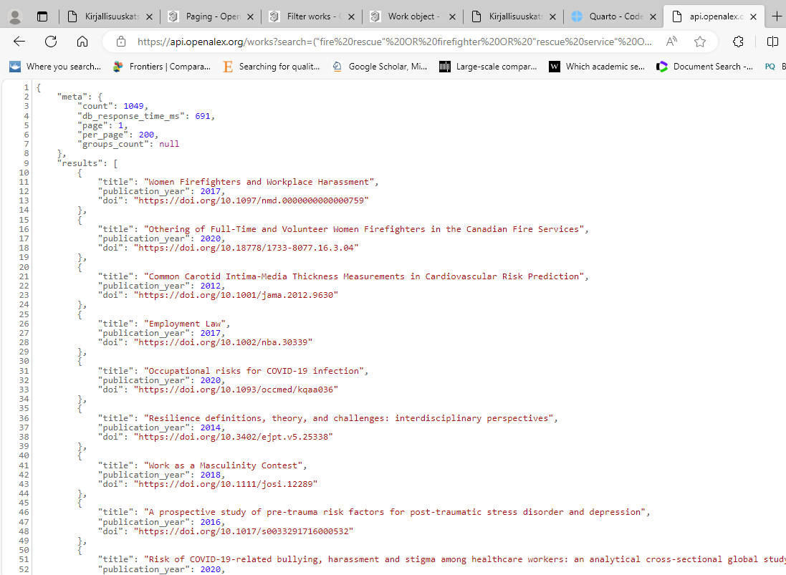
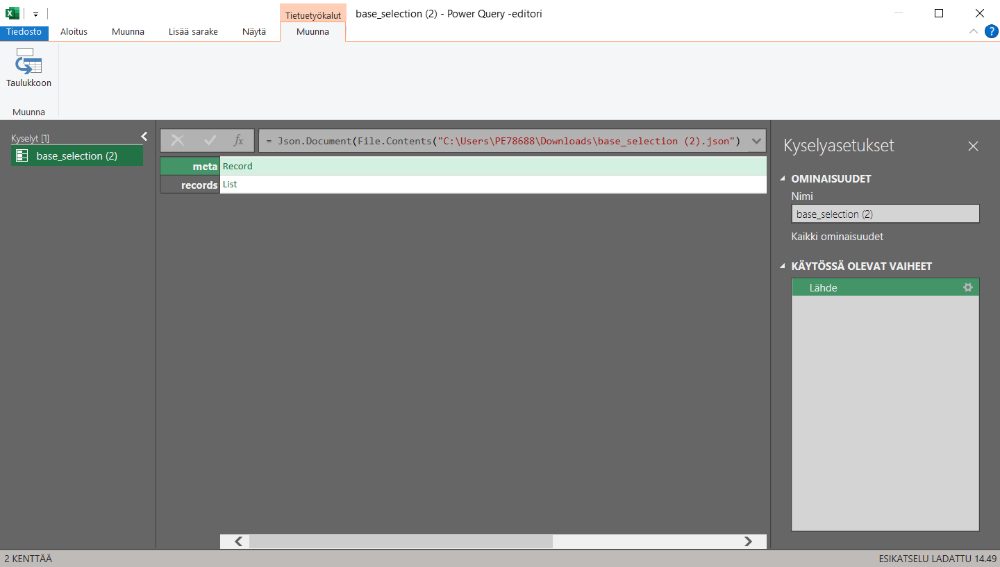
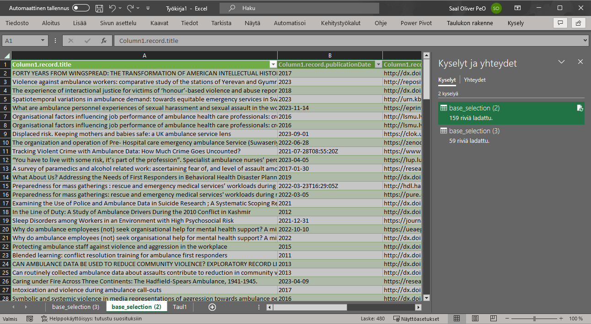

15 OpenAlex
Osoite: https://openalex.org/
Sisältö: Yleinen tutkimuskirjallisuus
Saatavuus: Avoimesti saatavilla (mutta julkaisut voivat olla rajattuja)
Aineistotyyppi: Vertaisarvioitu tutkimusraportti, harmaa kirjallisuus
Alusta: Itse kehitetty
Huomioita: OpenAlexista haetaan vain vertaisarvioituja tutkimusraportteja.
OpenAlex toimii API-periaattella. Tämä tarkoittaa, että OpenAlexin hakua ei suoriteta visuaalisessa hakukentässä (verkkosivulla, kuten useimmat muut hakukoneet), vaan haku toteutetaan kirjoittamalla hakukriteerit verkko-osoitteeseen.
Ole hyvin tarkkana verkko-osoitteen muodostamisen kanssa! Emme voi “tarkistaa” jälkikäteen, menikö haku oikein muulla tavalla, kuin lukemalla rakennettu verkko-osoite.
Verkko-osoite palauttaa JSON-tiedoston selaimessa, joka tallennetaan omalle koneelle ja käsitellään hyvin samankaltaisella tavalla kuin BASE:n tulokset (ks. Luku 14).
15.1 Hakulausekkeen muodostaminen
OpenAlexissa on seuraavat hakusäännöt:
Boolelaiset algebrasanat AND, OR ja NOT toimivat kuten yleensä.
Villikortteja ei voi käyttää: OpenAlex muodostaa sanarunkoja ja hakee samankaltaisia sanoja automaattisesti, eikä tätä toimintoa voi asettaa pois päältä.
Erilaisilla suodattimilla voidaan rajata hakutuloksia:
filter=-sanalla ilmaistaan, että seuraavaksi tulee suodattimia. Tämä on pakollinen suodattimien käytössä!Yhdelle filtterille (esim. dokumenttityyppi) voi antaa useita rajauksia. Nämä erotetaan toisistaan boolelaisella algebralla, mutta erityismerkeillä:
+(AND),|(OR) ja!(NOT).from_publication_date:määrittelee aikarajauksen alun. Kirjoitetaan muodossaYYYY-MM-DD, esimerkki:from_publication_date:2010-01-01to_publication_date:määrittelee aikarajauksen lopun. Kirjoitetaan muodossaYYYY-MM-DD, esimerkki:to_publication_date:2023-09-30type_crossref:määrittelee dokumenttityypin. Meidän rajaukset ovat useinjournal-article,monographjareport.
OpenAlexin hakuosoite näyttää seuraavalta:
https://api.openalex.org/works?search=("fire rescue" OR firefighter OR "rescue service" OR "emergency respon" OR "emergency personnel" OR "emergency medic" OR "ambulance") AND (discriminat OR harass OR violen OR "improper behavior" OR equali OR "non-discriminat" OR equit)&filter=from_publication_date:2010-01-01,to_publication_date:2023-09-30,type_crossref:journal-article|monograph|report&per_page=200&select=title,publication_year,doi&page=1
Tätä on helpompi lukea, jos erittelen sen riveihin. Muista kuitenkin, että osoite pitää olla ilman rivejä kun se suoritetaan selaimessa!
Ensin annetaan pääosoite OpenAlexin servereille: https://api.openalex.org/
Sitten pyydetään haettavaksi teoksia: works?
Sitten ilmaistaan hakulauseke search-toiminnolla: search=("fire rescue" OR firefighter OR "rescue service" OR "emergency respon" OR "emergency personnel" OR "emergency medic" OR "ambulance") AND (discriminat OR harass OR violen OR "improper behavior" OR equali OR "non-discriminat" OR equit)
Seuraavaksi voidaan listata filttereitä filter-toiminnolla. Huomaa &-merkki, joka yhdistää filtterit osaksi hakua: &filter=
Yksittäiset filtterit listataan aina muodossa avainsana:asetukset, joten koko filtteristä tulee: &filter=``from_publication_date:2010-01-01,to_publication_date:2023-09-30,type_crossref:journal-article|monograph|report
- Ensin suodatan tulokset aikavälille 1.1.2010-30.9.2023
- Sitten valitsen vain aikakauslehdet, kirjat tai raportit
Näiden jälkeen määritellään maksimitulosmäärä per sivu, eli kaksisataa: &per_page=200
Sitten määritellään vielä, mitä me halutaan tuloksistamme. Tässä tilanteessa pyydetään vain otsikkoa, vuotta ja DOI-numeroa: &select=title,publication_year,doi
Viimeiseksi voidaan määritellä, mikä sivu tuloksista halutaan. Koska OpenAlexin tulokset tulevat sivuittain (maksimissaan 200 tulosta per sivu), joudumme suorittamaan haun uudelleen jokaiselle tarvittavalle sivulle: &page=1.
Hakuosoite kannattaa valmistella hyvin alkeellisessa tekstinkäsittelyohjelmassa, kuten Muistiossa Windows-koneilla. Tämä varmistaa, ettei tekstiin hiivi kummallisia erikoismerkkejä.
Kun olet valmistanut hakuosoitteen, voit kopioida sen selaimen osoitekenttään ja painaa Enter siirtyäksesi tuloksiin. Sinulle avautuu seuraavan kaltainen näkymä:

Ensimmäisenä haussa näet metatiedot. Näistä on hyvä heti tarkistaa, kuinka monta tulosta yhteensä löytyy (count), ja kirjata tämä dokumentointiin heti tässä vaiheessa.
Tulosmäärän pohjalta tiedät myös, kuinka monta sivua joudut hakemaan. Koska minulla on 1049 tulosta ja 200 tulosta per sivu, joudun hakemaan 200 + 200 + 200 + 200 + 200 + 49 tulosta, eli suoritan kuusi hakua. Jokaisen haun kohdalla nostan page-määritelmän numeroa (ks. yllä).
Nyt voit myös tarkistaa, toimiko haku niin kuin piti. Jos tulokset näyttävät pahasti vääriltä, muokkaa hakuosoitetta ja yritä uudelleen.
Tallenna yksitellen sivut koneellesi painamalla Ctrl + S tässä näkymässä. Suosittelen nimeämään sivut jotenkin järkevästi, esim. sivu-1, sivu-2 jne., jotta pysyt kärryillä lataamistasi sivuista.
Toista nyt hakuprosessi niin monta kertaa, että olet saanut kaikki tuloksesi.
Helpoin tapa varmistaa, että olet hakenut kaikki tulokset, on jatkaa page-numeron nostamista kunnes hakutulokset ovat tyhjiä - tällöin olet mennyt “yli” sivumäärien.
15.2 Tulosten tallentaminen
OpenAlex tuottaa JSON-tiedostoja, jotka tulee kääntää taulukkomuotoon Excelin Power Query -työkalulla. Prosessi on melkein sama kuin BASE-hakukoneessa (ks. Luku 14), mutta eroaa ihan pienesti.
Avaa tyhjä Excel-taulukko.
Valitse
Tiedot > Nouda tiedot > Tiedostosta > Kohteesta JSON.Valitse ensimmäinen ladattu tiedostosi ja paina
Tuo.Sinulle avautuu Excelin Power Query -editori:

Toista seuraava prosessi jokaiselle tiedostolle, jonka latasit:
Löydä rivi results ja paina siinä olevaa List-tekstiä. Kuvaruutu muuttuu pitkäksi taulukoksi.
Ylhäältä olevasta valintabannerista, paina Taulukkoon-nappia. Esille tulevassa ruudussa, älä muuta mitään ja paina vain OK.
Löydä sarake Column1 ja paina sen oikeassa laidassa olevaa kahden nuolen kuvaketta. Esille tulevassa ruudussa, älä muuta mitään ja paina vain OK.
Lisätäksesi seuraavan tiedoston: Ylhäältä olevasta valintabannerista, valitse
Aloitus > Uusi lähde > Tiedosto > JSON. Löydä seuraava tiedosto ja paina Tuo. Aloita formatointi uudestaan.
Toista yllä oleva prosessi kunnes kaikki ladatut tiedostot ovat listattuna Power Query -ikkunan vasemmassa palkissa. Seuraavaksi yhdistetään kaikki tiedostot yhdeksi:
Valitse ensimmäinen kysely listasta.
Navigoi
Aloitus > Yhdistä > Liitä kyselyt loppuunValitse joko “Kaksi taulukkoa” (jos latasit vain kaksi tiedostoa) tai “Vähintään kolme taulukkoa” (jos latasit useamman kuin kaksi).
Jos valitsit “Kaksi taulukkoa”: Valitse toinen tiedosto listalta (eli se, jonka latasit ja käsittelit toiseksi).
Jos valitsit “Vähintään kolme taulukkoa”: Varmista, että kaikki tiedostot löytyvät nimettyinä Liitettävät taulukot -alueelta.
Paina OK. Excel liittää nyt kaikki muut tiedostot ensimmäisen tiedoston taulukkoon.
Valitse ensimmäinen kysely listalta.
Valintabannerista, paina Sulje ja lataa.
Excel tekee yhden välilehden jokaiselle taulukolle. Koska me yhdistimme muiden taulukoiden tulokset ensimmäiseen, sinun tulee kopioida vain ensimmäisen taulukon välilehden tuloksiisi (Kuva 15.3).

Voit nyt valita kaikki tulokset (vie osoitin soluun A1 ja paina Ctrl + oikea valitaksesi seuraavat sarakkeet, ja sitten Ctrl + alas valitaksesi kaikki rivit) ja kopioida ne suoraan tulostaulukkoosi. Muista liittää ne toiminnolla “Liitä arvot”.